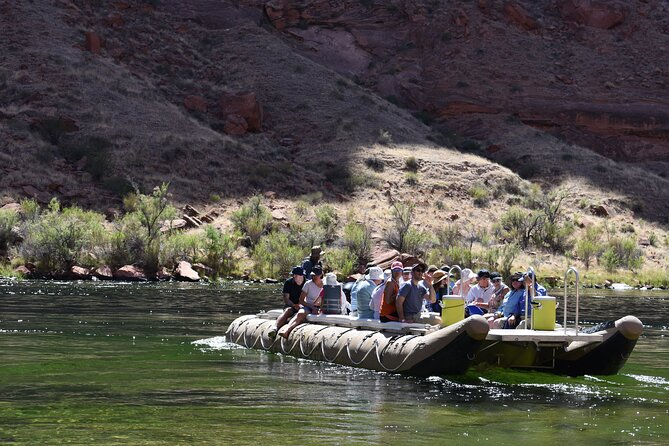
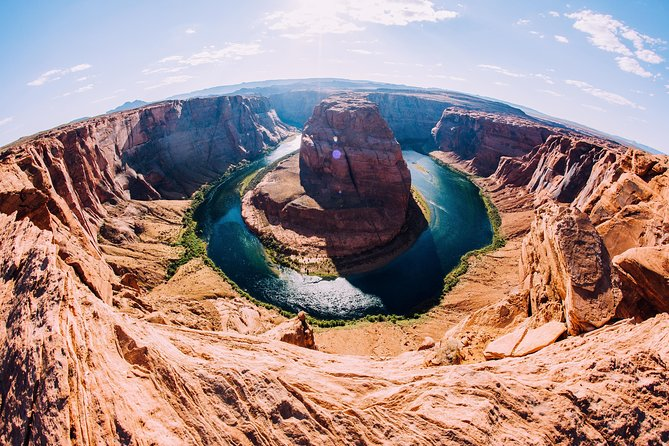
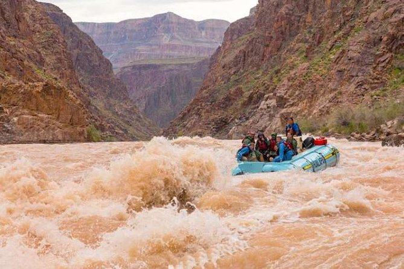

Book Your Adventure Today!
Ready for the thrill of a lifetime? Contact us to reserve your spot on one of our exciting rafting trips!
Contact UsHalf Day Smooth Water Rafting Trip
Great for all ages, enjoy a ride through a 2-mile long tunnel to the base of Glen Canyon Dam where you will walk to your river raft with sandstone walls soaring 700 feet above you. Your friendly guide will help you aboard our roomy 32-foot raft. Then sit back and relax as you take in the sights and stories of the Colorado River in Glen Canyon including the rich natural and human history of the region. You’ll make a beach stop, where you can take a short hike to see a petroglyph panel and even take a quick dip in the cool river. Back aboard your river raft, you’ll float through iconic Horseshoe Bend. Look for rainbow trout in the crystal-clear water, dozens of birds nesting on the banks of the river and possibly a herd of big horn sheep along the way. Your raft trip ends at historic Lees Ferry, where you’ll board our buses for the ride back to River Headquarters.
Antelope Canyon and Lake Powell Flight with River Rafting
Explore the Grand Canyon from the land, air, and water on this full-day sightseeing adventure. Experience a flight over the Grand Canyon’s East Rim, the Colorado River, and Lake Powell en route to Page, Arizona. Then take a tour of Antelope Canyon with an American Indian guide, followed by a leisurely motorized rafting trip along the Colorado River, including a scenic hike. The return drive back to the Grand Canyon features a stop to shop for Navajo crafts. Continental breakfast and lunch included.
Self-Drive 1-Day Grand Canyon Whitewater Rafting Tour
Add a thrilling outdoor adventure to any Las Vegas or Flagstaff vacation with this guided whitewater rafting trip down the Colorado River. Take a road trip to Peach Springs, Arizona, home of the Hualapai Indians at the gateway to the Grand Canyon. Then, challenge the mighty Colorado River’s varied rapids on a 40-mile (64-kilometer) journey through the canyon, taking a side hike to a travertine waterfall along the way. Boxed lunch is included, and an optional hotel pickup and drop-off is available to purchase. Drive your own car to join your Grand Canyon whitewater rafting tour Follow Native Hualapai Indian guides through the Grand Canyon See beautiful natural waterfalls hidden throughout the canyon Whitewater raft down 40 miles (64 kilometers) of the mighty Colorado River What's Included
Grand Canyon White Water Rafting Trip from Las Vegas

Add a thrilling outdoor adventure to any Las Vegas vacation with this guided, full-day whitewater rafting trip down the Colorado River. Enjoy a road trip to Peach Springs, Arizona, home of the Hualapai Indians at the gateway to the Grand Canyon. Then, challenge the mighty Colorado River’s varied rapids on a journey through the canyon, taking a side hike to Travertine Falls along the way. A boxed lunch and a hotel pickup and drop-off are included. Travel in air-conditioned comfort to the Grand Canyon in new 12-passenger vans Las Vegas river rafting takes you through the mighty Colorado River See the incredible natural waterfalls hidden throughout the canyon Maximum of eight passengers per raft Las Vegas white water rafting is a once-in-a-lifetime experience
| Trip Name | Duration | Difficulty | Price |
|---|---|---|---|
| Half Day Smooth Water Rafting Trip | 1 day | Beginner | $150 |
| Antelope Canyon and Lake Powell Flight with River Rafting | 3 days | Intermediate | $250 |
| Self-Drive 1-Day Grand Canyon Whitewater Rafting Tour | 5 days | Advanced | $350 |
| Grand Canyon White Water Rafting Trip from Las Vegas | 7 days | Master | $600 |